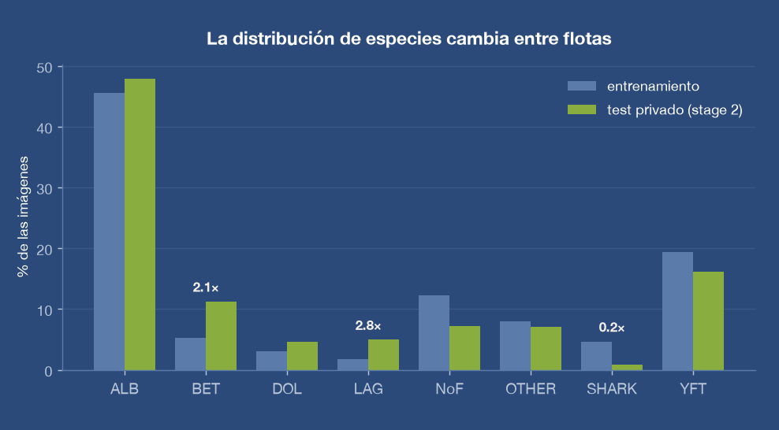
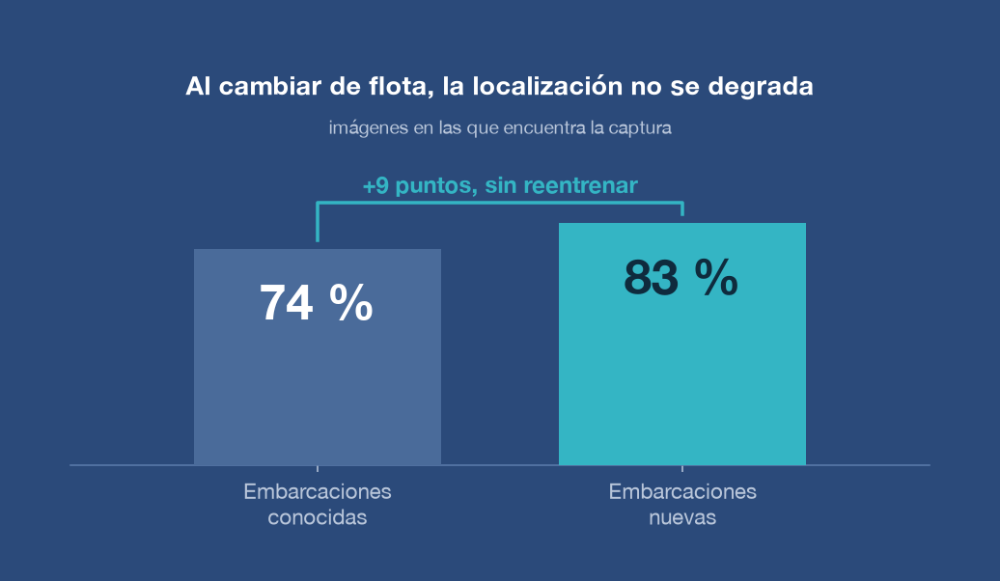
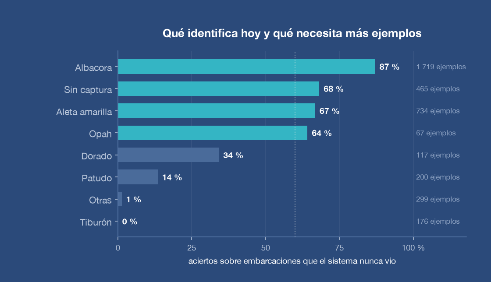
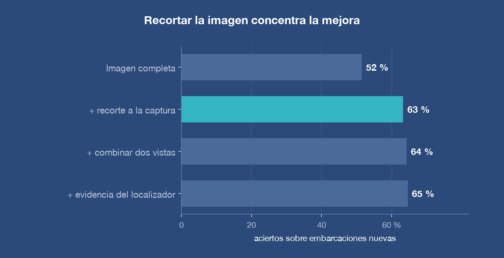

Detecta el vacío
Reconocer cuándo no hay captura evita inflar los conteos. El sistema acierta en el 68 % de esos casos, apoyado en la confianza del localizador.
Las cámaras ya están instaladas en las embarcaciones. Lo que falta es quien vea las grabaciones. Construimos el sistema que las lee y registra qué especie se capturó, sin observadores adicionales.
La regulación pesquera exige saber qué se pescó, cuánto y dónde. Verificarlo depende hoy de observadores humanos a bordo.
La brecha de cobertura
Poner una persona a bordo cuesta caro, exige capacitación y hay pocas disponibles. Solo una fracción de los viajes se verifica. El resto se declara sin comprobación independiente.
Muchas flotas ya instalaron cámaras para cubrir ese hueco. Pero grabar no es monitorear: alguien tiene que ver miles de horas de video. El cuello de botella se movió de la cubierta a la oficina.
Convertir esas grabaciones en un registro estructurado de capturas, de forma automática, para que la verificación deje de depender de cuántas personas se puedan contratar.

Dos pasos: primero encontrar el animal en la imagen, después identificarlo.
Paso 1 · Localizar
El resto de la imagen es cubierta, redes, tripulación y mar. Un sistema que mira la foto completa termina reconociendo el barco en vez del animal, y falla en cuanto se instala en una embarcación distinta. Por eso el primer paso es recortar.

Paso 2 · Identificar
La localización funciona describiendo el objetivo en palabras. No hay que marcar miles de recortes a mano para arrancar, que es lo que vuelve caros y lentos estos desarrollos.
Sobre el recorte, un segundo modelo determina la especie. Ese modelo sí se entrena con ejemplos etiquetados, pero necesita muchos menos: al haber eliminado el fondo, la tarea es más simple.
Entrenar el sistema completo tomó tres horas de una tarjeta gráfica de alquiler. No requiere infraestructura dedicada ni un equipo de anotadores.

Todas las cifras se midieron sobre embarcaciones que el sistema nunca vio durante su entrenamiento. Es la única medición que anticipa lo que pasa al instalarlo en una flota real.

Las cuatro categorías superiores concentran el grueso de las capturas y ya funcionan. Las de abajo comparten una sola causa: hay pocos ejemplos. El tiburón aparece en 176 imágenes provenientes de cinco embarcaciones, así que el sistema nunca vio suficiente variedad para reconocerlo en una sexta.
No es un límite del método, es una cuenta de datos. Sabemos cuántos ejemplos faltan por especie y ese es el trabajo que sigue.
Reconocer cuándo no hay captura evita inflar los conteos. El sistema acierta en el 68 % de esos casos, apoyado en la confianza del localizador.
La localización mantiene su desempeño al cambiar de embarcación. Incorporar un barco nuevo no exige reentrenar ni recalibrar.
Separamos embarcaciones completas al evaluar. Repartir las imágenes al azar habría reportado un error diez veces menor que el real.
El mismo sistema atiende necesidades de tres actores distintos.
Verificación de declaraciones de captura y seguimiento de cuotas por especie, con cobertura de flota completa en lugar de muestreo.
Registro automático de composición de captura y descarte, útil para certificaciones de sostenibilidad y para acceder a mercados que las exigen.
Procesamiento de archivos históricos de video que hoy están guardados sin analizar, para reconstruir series de tiempo de abundancia.
Más allá de la pesca
Localizar un organismo descrito en palabras, sin etiquetado previo, sirve para cualquier conteo sobre imagen. Lo estamos aplicando al seguimiento de macroalgas invasoras en Laguna Ojo de Liebre, donde el problema es el mismo: hay imágenes de sobra y nadie que las revise una por una.
Prototipo funcional validado sobre 16,930 imágenes de cubierta. Sigue una prueba en operación con una flota socia y ampliar los ejemplos de las especies que hoy quedan cortas.

Buscamos embarcaciones socias para una prueba en operación. Si tienes cámaras instaladas y grabaciones sin analizar, hablemos.
Contactar a OceanMix